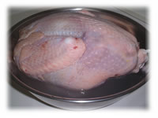

| ..*..*.. 2002年11月30日(土) くもり ..*..*.. 11月の第4木曜日は「感謝祭」です。 アメリカ人の過ごし方は、日本でのお正月にあたり、それぞれ実家に戻ったり、家族を呼んだりと大忙しです。家の周りの道も、この日ばかりはシーンと静かになります。このシリコンバレー近辺では、80万人が家族に会うために移動しているそうです。でも、私たち外国人にとってはゆっくりできるときでもあります。 今年は、家でターキーを焼くことにしました。いろんな人に教えてもらった作り方を総合して、こんな風につくりました。  (1) 2日前に冷凍のターキーを買ってきて、塩水につけます。このときの塩はたっぷりで、カップ1/2くらい使いました。 (2) 今年の香りはローズマリー。おととしはデイルにして、それもおいしかったです。ローズマリーはアパートにたくさん生えているので、小さな花束分(35g)くらいとってきました。 (3) ターキーを中も外側も水でよく洗い、半分くらいを敷き詰めたローズマリーの上に載せます。 (4) スタッフィングというターキーの中に入れる「つめもの」を作ります。パン粉(150g)、セロリ(2)、にんじん(1)、たまねぎ(1)、バター(50g)を1センチ角くらいに切って混ぜます。うちは、その2/3くらいの量をターキーの中に詰め、残りの1/3は別に焼いて、食べる時に混ぜます。たこ糸で写真のように結びます。 (6) 350度F(180度C)のオーブンで、今回は3時間焼きました。ターキーの中の温度をはかるものがあるので、170FくらいになればOK。こんな風になればできあがりです。 昨日も今日も食べて、さすがに食べ終わりました。 |